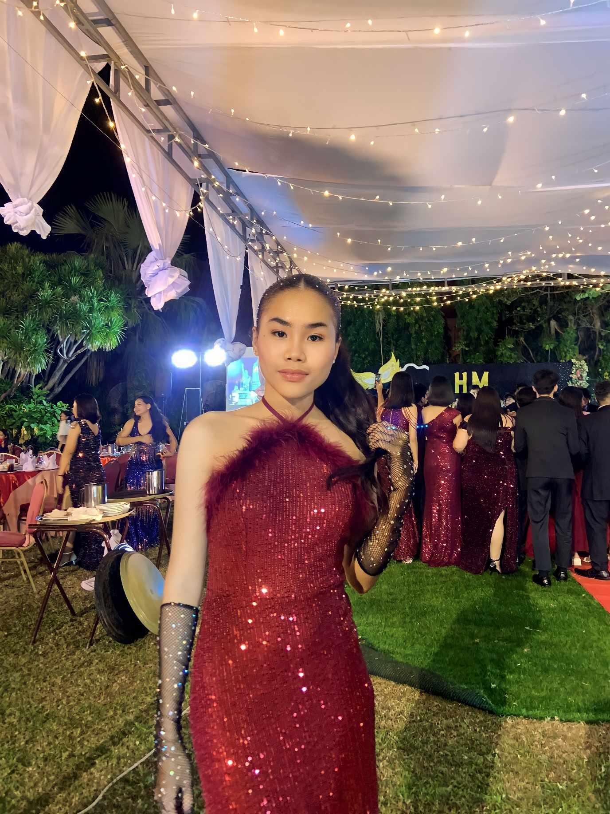
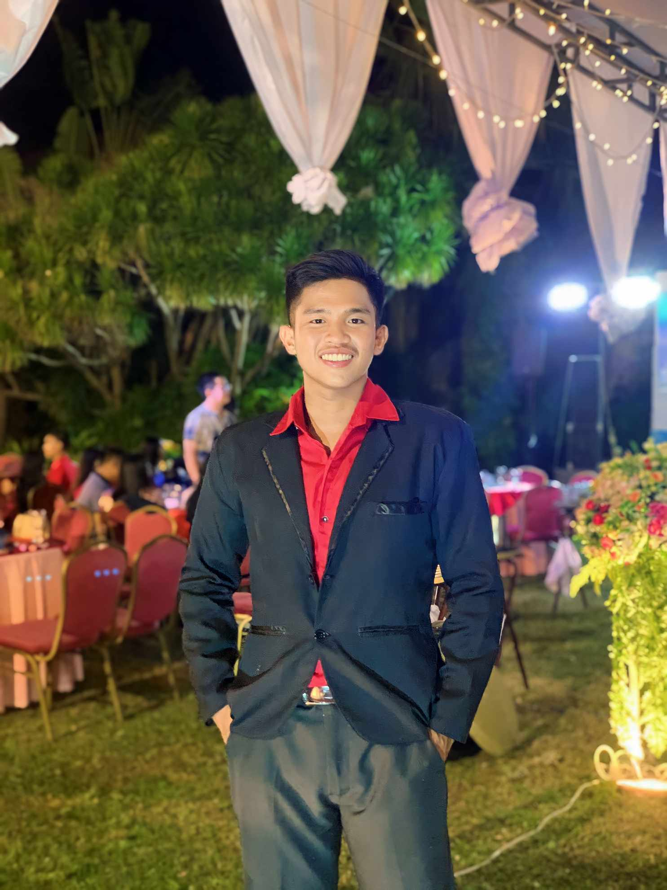
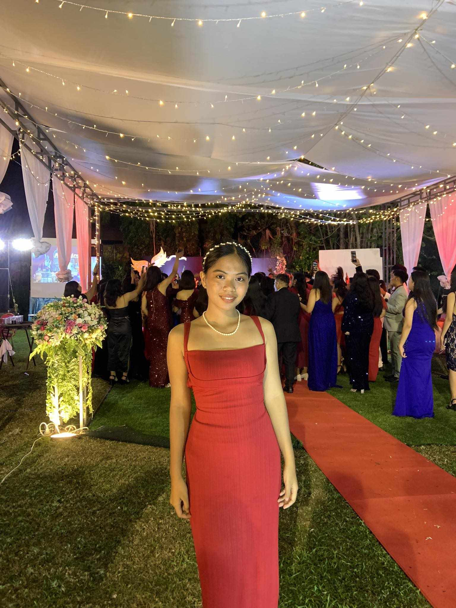
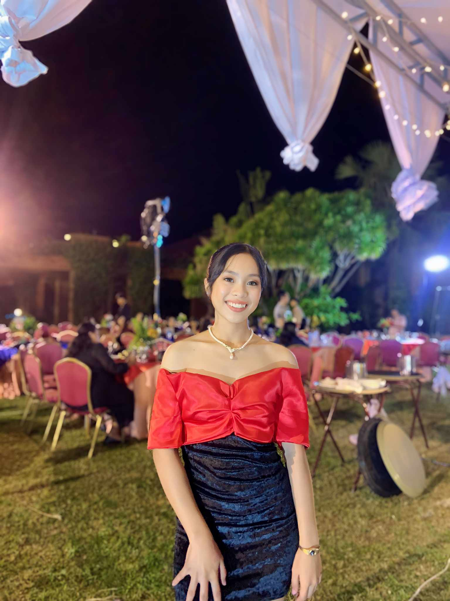

Meet Irish, a simple girl with a heart as sweet as her dream to become a pastry chef! Turning 20 on December 25, she is not just celebrating a birthday,she's unwrapping another chapter in her flavorful journey. You can call her "Irish," this simple yet extraordinary girl finds joy in the art of cooking, transforming ordinary moments into culinary masterpieces. When she is not whipping up magic in the kitchen, you will catch her immersed in the world of Wattpad or creating vibrant canvases with her paintbrush. Family is her anchor, and the hues of pastel pink are her palette. Her favorite dish? A comforting bowl of Pork Sinigang. Join Irish as she navigates life with the motto, "Embrace the journey, and the results will follow."

Introducing Mark Laud, fondly called Macky. His world is painted in hues of blue, reflecting his calm and composed demeanor. A culinary enthusiast at heart, he finds solace in the comforting embrace of Sinigang na Bangus. With aspirations to craft culinary masterpieces, Mark dreams of donning the chef's hat, where each dish becomes a canvas of creativity. Guided by the mantra, "Success is the sum of small efforts, repeated," Mark approaches life with diligence, recognizing the power of consistent determination on the path to success.

Glaiza graceful dancer with a heart that beats to the rhythm of music! With every step and twirl, Glaiza expresses her emotions and tells stories through the art of dance. Turning 20 on December 27, she is not just celebrating a birthday, but also stepping into a new chapter in her dance journey. You can call her "Glaiza," this extraordinary girl finds pure joy in the movement of her body, embracing the freedom and creativity that dance brings. When she is not perfecting her dance routines, you will find her exploring the great outdoors, captivated by the beauty of nature and the serenity it brings. Family is her biggest support system, and the colors of a breathtaking sunset inspire her passion for dance.. Join Glaiza as she navigates life with the motto, "Dance like nobody's watching, and let your soul be your guide."

Be prepared as we meet and learn about a dreamer, a positive thinker, and an aspirant chef named Janelle~. She's not only into cooking but also wants to travel and experience the different cultures in the world. In her free time, she enjoys spending time with her family, watching movies, and reading digital novels, mostly in the romantic and fantasy genres. Mint is her favorite color, which means warm and calm. A spicy and delicious Bopis is her favorite food. Every person could encounter different challenges, but as they say, "Every challenge is an opportunity to grow."
Motto in life: "Every challenge is an opportunity to grow.".
Let me introduce you to Jovan, a thrill-seeking adventurer with a passion for motorcycles! With a love for the open road running through his veins, he's always ready to hop on his bike and feel the adrenaline rushing through his veins. Turning 20 on June 30, he's not just celebrating another birthday, but another year of exhilarating rides and unforgettable experiences. You can call him "Jovan ," this free-spirited individual finds solace in the freedom and excitement of riding, turning ordinary roads into thrilling adventures. Family is his rock, and the colors of midnight blue and fiery orange are his signature. His favorite ride? Tackling the winding mountain roads with breathtaking views. Join Jovan as he embraces the open road with the motto, "Life is a journey, enjoy the ride!"
Meet Shaine, a girl who seem strong on the outside but the truth, she is as delicate as fragile glass on the inside. People also know her, if she likes something, will definitely get it. She wants to work in a cruise ship someday because for her, working in a cruise ship gives a lot of opportunities also she wants to travel the world. In this 24th day of December, she'll gracefully step into the realm of adulthood, a world of unwritten possibilities, leaving behind the tales of her youth like a captivating prologue to the adventures that await. You can call her by her first name ‘Shaine’ because only her family and close friends can call her by her second name. During weekends, she enjoys going to spontaneous rides, going to beaches, watching sunset, she also likes reading books when she’s alone and loves taking pictures . Violet is her favorite color but she made people think she loves pink but she likes to wear black that’s how chaotic her life is. She likes kare-kare not just for its rich flavors, but because it's a specialty of her mother as well. Just like a caramel macchiato, her life blends with a symphony of flavors – the sweet highs, the subtle nuances of challenges, and the bold richness of dreams. It's a concoction of moments, each sip revealing a new layer of her uniquely crafted story, as she navigates the artistry of her own journey. enter the world of Shaine—a keeper of moments. Guided by her motto, "If it speaks to the heart, it earns a place in the cart," she navigates life's marketplace, filling her cart with the echoes of emotions, the hues of connection, and the melodies of genuine experiences.